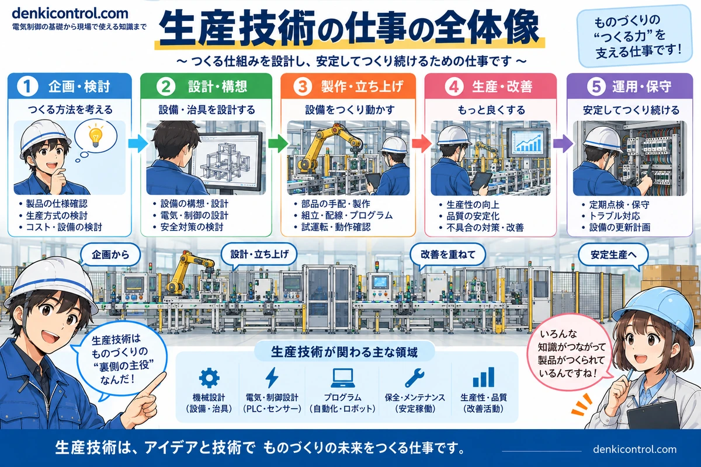
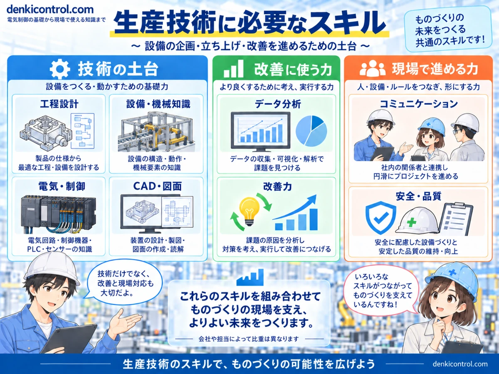
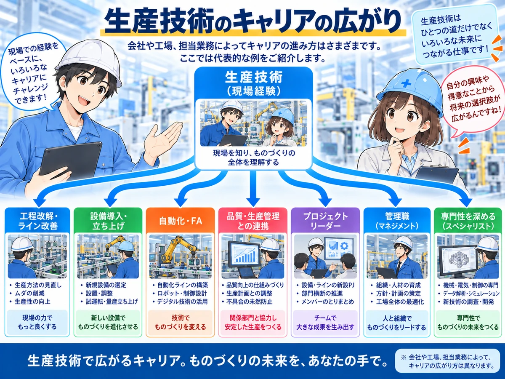

生産技術は「安定して作れる仕組み」をつくる仕事
製品設計が完成しても、そのままでは量産できません。作業順序、設備、治具、検査方法、タクト、安全条件などを整理し、現場で繰り返し作れる工程へ落とし込むのが生産技術の中心です。
会社によって担当範囲は異なります。工程改善を中心に担当する会社もあれば、設備仕様、治具、自動化、PLC・ロボット、試運転、量産立上げまで一人で広く担当する会社もあります。


生産技術って、設備を買って入れる担当というイメージでした。

設備導入も大事だけど、それだけじゃないよ。どう作るかを考えて、量産できるところまで立ち上げ、その後も改善していく仕事なんだ。
主な仕事内容
製品・工程条件を確認する
何を、どの品質で、どれだけの数量・タクトで作るのか、安全や検査条件も含めて必要条件を整理します。
工程を設計する
作業順序、人と設備の分担、検査位置、物流動線などを決め、安定して繰り返せる工程を考えます。
設備・治具を導入する
設備仕様、治具、センサ、PLC、ロボットなどを検討し、メーカーや社内関係者と仕様を詰めます。
試運転・量産立上げをする
実機で能力・品質・安全・操作性を確認し、問題を一つずつ潰して量産条件を作り込みます。
立上げ後の改善をする
停止時間、不良、作業時間、設備能力などを見ながら、ボトルネックやムダを減らしていきます。
必要なスキルは3つの軸で考えると分かりやすい
生産技術では、技術の土台・改善に使う力・現場で進める力を組み合わせて仕事を進めます。すべてを最初から同じ深さで身につける必要はなく、会社・業種・担当設備によって求められる比重は変わります。

1. 工程設計
製品仕様から作業順序・レイアウト・生産能力を考え、安定して作れる工程へ落とし込みます。
2. 設備・機械知識
機械構造や設備仕様、治具、保全性などを理解し、設備選定や改善に活かします。
3. 電気・制御
PLC、センサ、アクチュエータ、電気回路、安全回路など。自動化設備を理解する土台です。
4. CAD・図面
設備・治具の構想や図面の作成・読解に使い、関係者との仕様共有にも役立てます。
5. データ分析
生産データ、停止時間、不良率などを可視化し、課題と優先順位を見つけます。
6. 改善力
原因を整理して対策を考え、品質・生産性・コスト・保守性の改善につなげます。
7. 現場対応・コミュニケーション
製造、設計、品質、保全、メーカーなどと連携し、条件や日程を調整して形にします。
8. 安全・品質
安全な設備・作業環境と、安定した品質を守る視点を工程や設備の設計に組み込みます。
当サイトで先に押さえたい記事
未経験から目指すなら、いきなり全部を覚えなくていい
未経験から生産技術を目指す場合は、最初から設備設計・PLC・機械・品質管理を全部できる必要はありません。まずは「製品 → 工程 → 設備 → 品質・タクト」というつながりを追えることが重要です。
- 担当する製品と工程を理解する
- 設備や治具が何のためにあるかを理解する
- タクト、不良、停止などの数字を見る
- 小さな改善を実施して結果を確認する
- 改善経験を設備導入や工程設計へ広げる
この順番で経験を積むと、単なる設備知識ではなく工程全体を良くする視点として理解しやすくなります。
経験者は「担当範囲」を広げるほどキャリアの選択肢が増えやすい
同じ生産技術経験でも、担当できる範囲や得意分野によってキャリアの広がり方は変わります。 現場経験を土台に、工程改善・ライン改善、設備導入・立ち上げ、自動化・FA、品質・生産管理との連携、プロジェクトリーダー、管理職、専門職など複数の方向へ進めます。

反対に、特定工程の改善だけに経験が偏っている場合は、次の職場で求められる設備導入や立上げ経験とのギャップが出ることがあります。転職前には「できること」と「まだ経験していないこと」を分けて整理しておくと判断しやすくなります。
生産技術と近い仕事を比べるなら、PLC・制御設計は設備を動かす制御の専門、設備保全は設備を安定稼働させる専門として見ると、担当範囲の違いを整理しやすくなります。
転職求人を見るときに確認したいポイント
- 担当工程：加工、組立、検査、物流など何を担当するか
- 業務の中心：工程改善、設備導入、新規ライン立上げのどれが中心か
- 技術範囲：PLC、ロボット、CAD、治具設計などどこまで自分で担当するか
- 出張・休日対応：設備立上げや工事対応の頻度
- 役割分担：製造、保全、品質、設計、設備メーカーとの境界
- キャリア：設備自動化、工程設計、プロジェクト管理など次の道があるか
「生産技術募集」とだけ書かれていても、実際の仕事はかなり違います。 求人票で分からない部分は、面接や転職サービスの担当者を通して具体的な担当範囲まで確認するのがおすすめです。
転職サービス比較は準備中です
比較記事は現在準備中です。仕事・必要スキル・キャリアはカテゴリトップから確認できます。
転職サービスは「今すぐ転職する人」だけのものではない
現在の経験でどんな求人があるかを見るだけでも、自分に足りないスキルや、評価されやすい経験が見えてきます。ただし、求人を見ることと転職を決めることは別です。
このサイトでは、電気・FA・製造業との相性や働き方の違いを分けて転職サービスを比較します。広告・アフィリエイトリンクは各サービスとの提携承認後に掲載します。
転職サービス比較は準備中です
比較記事は現在準備中です。公開まではキャリア・転職トップから関連記事を確認できます。
まだ転職先探しの前段階なら
仕事 → 必要スキル → キャリアの順で整理できます。
まとめ
生産技術は、工程設計・設備導入・量産立上げ・改善をつないで、製品を安定して作れる仕組みにする仕事です。
これから目指す人は担当工程と設備の理解から順番に、経験者は担当できる範囲を広げる視点で経験を積むと、仕事の幅とキャリアの選択肢を増やしやすくなります。